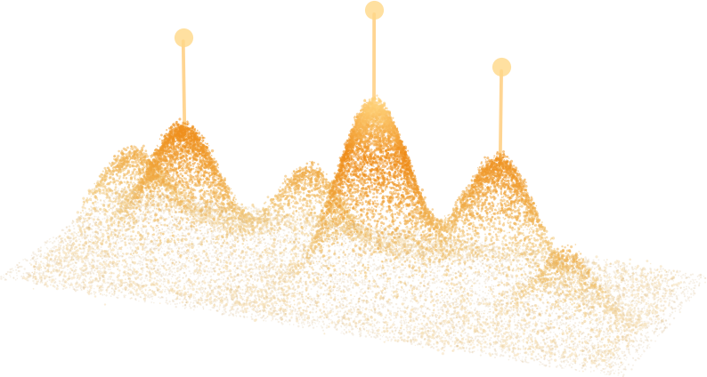

统一算法框架
选基因面板 · 选候选多肽 · 选多基因组合 ｜ 目标显式写成 价值 − 冗余，规模与载体容量写进目标，每个入选项可追溯

同构。
三类任务，同一个表达式
min xᵀQx x ∈ {0,1}ⁿ从有限的已有证据出发，在硬约束内挑出一个小而互补的子集。 换任务只换 Q 的两项含义，不换求解方式。
每个候选对任务目标的贡献：与表型的互信息、功能实验证据、模型给出的概率。
候选之间的重复：基因间相关性、肽的序列家族、作用机制重叠。
Q = (1−α)R − α·diag(I)。规模 k、AAV 容量、表达方式作为约束一并进入。
α 用二分搜索定到目标规模（胎肝 0.3203、小胶质 0.3662）；阈值与权重在训练集上定死。
禁忌搜索 / 遗传算法 / MQLib / Ocean，以及玻色量子 CIM 真机采样。
LASSO 与随机森林对照、论文独立测试集只评一次、湿实验结果写回证据表。
核心机制
三类输入 → 统一编码 → min xᵀQx → 多组近优解 → 一份可以交给实验室的候选名单
x ∈ {0,1}ⁿ，选或不选。
多个谷底 = 多组同样合格的子集；
要的是一批候选，不是唯一解。
创新性 · 独一性 · 特点
每一处都对应一个可以核对的数字或一条可以追溯的记录，不是方法学口号
常规：每类任务各写一套评分与流程。
我们：都写成 min xᵀQx，换任务只换 I 与 R 的含义。
求解器、精度分析与硬件通路建一次，三处复用。
常规：按单项显著性排序，取前 k 个。
我们：冗余项 R 直接出现在目标里，入选项彼此互补。
小胶质面板回归 MSE 0.0210，全基因 0.0253。
常规：先挑最优，再看容量、递送、合成能不能实现。
我们：规模 k、AAV 容量 bp、过表达可行性是约束。
输出直接是可执行构型，不靠事后淘汰。
常规：看着测试集反复调参数与阈值。
我们：阈值固定 0.50，特征与模型在训练集交叉验证上定死。
ACC 0.891 / MCC 0.783 是一次评分的结果。
常规：硬件结果换一套口径宣传。
我们：都在原始浮点 Q 上评能量，真机原始解与精修解分开列。
与 Ocean 相差 0.16%、重叠 45/50，是可核对的数字。
已验证的结果 · 玻色量子的位置
公开数据、公开划分、独立对照；硬件结果与经典结果分开列出，不混为一次运行
小胶质面板回归 MSE 0.0210，LASSO 0.0177，随机森林 0.0220，全基因 0.0253。 面板比全基因好，仍不及 LASSO。
已验证同一公开划分，独立测试集只评一次。论文是 10 编码 × 5 算法共 50 个概率特征再堆叠， 本方法是单个提升树，输入含 N 端第一个二肽。
已验证证据表按 Gene × Action × Context 组织，过表达与敲除分开记。 容量与表达方式在求解时就是约束，不是事后筛。
设计中，未求解已验证：14-bit 真机、2,500 基因的锁定 Q。原始解 315 个基因、E = +9.8033； 经 1-bit 精修后 48 个基因、E = −1.5862，与 Ocean 的 −1.5888 相差 0.16%，重叠 45/50。
现实限制：8-bit 直接提交出现全零解与正能量解，原因是动态范围，不是问题规模； 需要范围适配与精修。
价值在规模：MQLib 在 120 秒预算内只收到 27 个基因、仍有 1,209 个可改进方向。 基因池扩到上万、组合项增多时，经典预算跑不完；CIM 的路径是把求解从「跑不完」变成「一次采样」。
硬件：范围适配 + 1-bit 精修